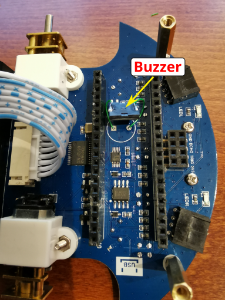

Modifications¶
In this section I describe modifications I successfully made on my PicoGo robot to (hopefully) improve the functionality of the robot. Implement them on your own risk.
Beeper with changeable frequencies¶
The built-in buzzer unfortunately can only buzz on one specific frequency and also is quiet loud. Therefore I decided to try and replace it with a passive buzzer that can be modulated. From another project, I knew a type of buzzer that should work with 3.3V MCUs. The device is a muRata PKMCS0909E4000-R1.
These are the changes in the schema that I made:
{kind=link}
I removed the existing active buzzer and soldered two small wires in place. The buzzer itself is then only soldered to these wires and not fixed otherwise. It is very light and I hope to get away with it. This is done on the top of board and can be seen in the first picture. On the bottom I needed to solder another wire to connect the buzzer directly to the GPIO4 on pin 6 and circumvent the transistor Q3 and the resistors R34 and R35. This can be seen on the second image.
{kind=link}
{kind=link}
Now the passive buzzer can be controlled using the PWM with code similar to the following:
from machine import Pin, PWM
from utime import sleep
buzzer = PWM(Pin(4))
def play_tone(frequency):
buzzer.duty_u16(1000)
buzzer.freq(frequency)
def be_quiet():
buzzer.duty_u16(0)
while True:
play_tone(440)
sleep(0.75)
be_quiet()
sleep(0.75)